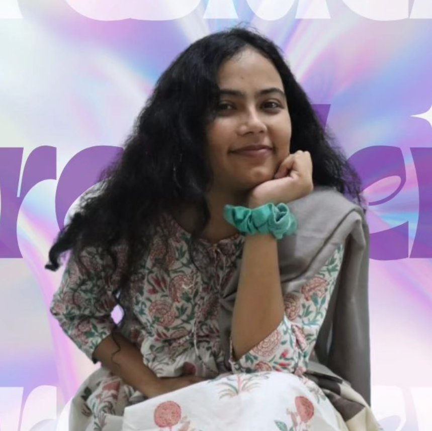
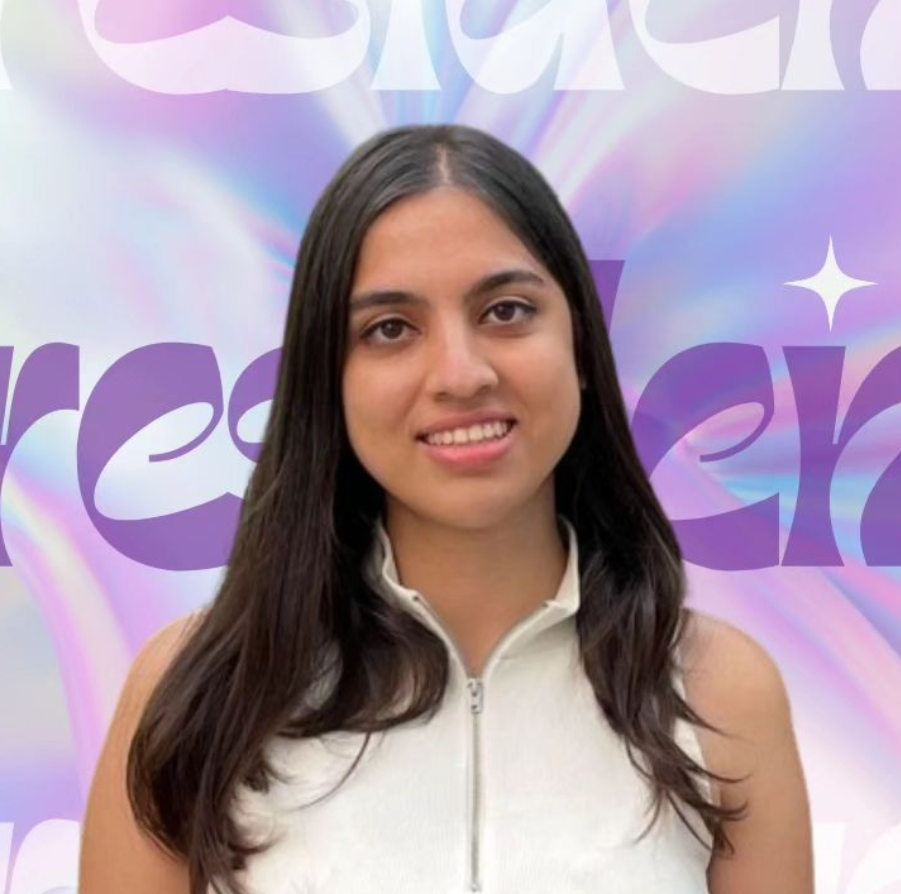

Manasi Duggal
Manasi Duggal
4th year
CSE
Throughout her time with Minerva, Manasi has consistently showcased a passion for technology and innovation. Her commitment to excellence and her ability to think outside the box have led to numerous successful projects and initiatives, significantly contributing to the forum's growth and success. Her leadership skills, coupled with her inspiring vision, have earned her the admiration and respect of her peers and mentors.
4th year
CSE
Throughout her time with Minerva, Manasi has consistently showcased a passion for technology and innovation. Her commitment to excellence and her ability to think outside the box have led to numerous successful projects and initiatives, significantly contributing to the forum's growth and success. Her leadership skills, coupled with her inspiring vision, have earned her the admiration and respect of her peers and mentors.
As President, Manasi is set to usher Minerva into a new era of innovation and achievement. Her plans
include expanding the forum's reach, launching groundbreaking projects, and providing more opportunities
for students to engage with the latest technological advancements. Under her guidance, Minerva will
continue to be a beacon of creativity and collaboration.

Sara Siddique
Sara Siddiquie
4th year
IT
Throughout her involvement with Minerva, Sara has demonstrated a profound passion for technology and a relentless drive for innovation. Her commitment to excellence and her visionary thinking have led to numerous successful projects and initiatives, greatly contributing to the forum's growth and success. Her leadership skills and inspiring presence have earned her the admiration and respect of her peers and mentors.
4th year
IT
Throughout her involvement with Minerva, Sara has demonstrated a profound passion for technology and a relentless drive for innovation. Her commitment to excellence and her visionary thinking have led to numerous successful projects and initiatives, greatly contributing to the forum's growth and success. Her leadership skills and inspiring presence have earned her the admiration and respect of her peers and mentors.
As President, Sara is poised to lead Minerva into an exciting future filled with innovation and
achievement. Her plans include expanding the forum's outreach, introducing groundbreaking projects,
and creating more opportunities for students to engage with cutting-edge technological advancements.
Under her leadership, Minerva will continue to be a hub of creativity and collaboration.

Anunya Sharma
Anunya Sharma
4th year
CSE AI
Anunya has consistently demonstrated a profound passion for technology and a commitment to fostering a vibrant tech community within our university. Her journey with Minerva has been marked by numerous achievements and initiatives that have significantly contributed to the growth and success of the forum. Her ability to inspire and lead by example has earned her the respect and admiration of her peers and mentors alike.
4th year
CSE AI
Anunya has consistently demonstrated a profound passion for technology and a commitment to fostering a vibrant tech community within our university. Her journey with Minerva has been marked by numerous achievements and initiatives that have significantly contributed to the growth and success of the forum. Her ability to inspire and lead by example has earned her the respect and admiration of her peers and mentors alike.
As President, Anunya is poised to take Minerva to new heights. Her vision for the forum includes
expanding its reach, introducing cutting-edge projects, and creating more opportunities for
students to engage with the latest advancements in technology. Under her leadership, Minerva
will undoubtedly continue to thrive as a hub of innovation and collaboration.
Contact


Brought to you by IGDTUW CITY
Connect with us:
Connect with us: